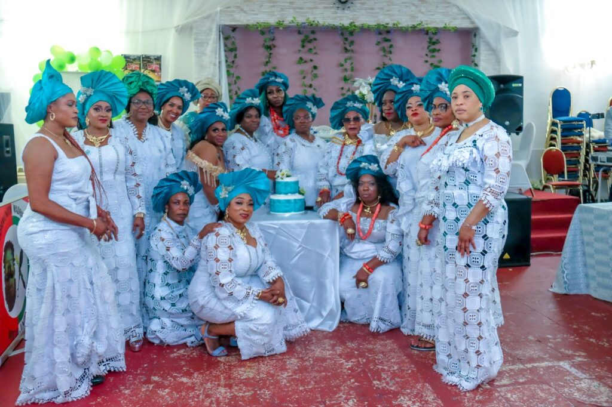
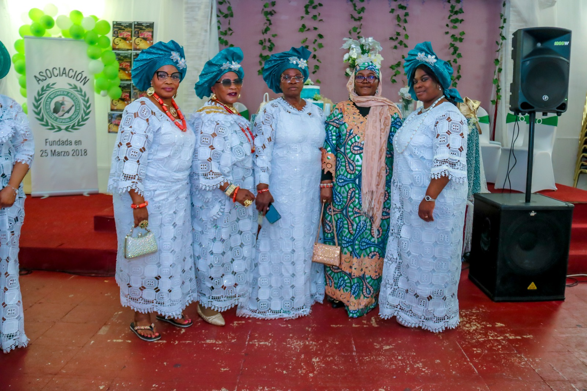

Together, we are stronger
Empowering women.
Strengthening communities.
We unite Nigerian women in Spain around friendship, dignity and practical action that changes lives.
Who we are
We are a group of women united by a shared vision: helping others live better lives through love, dignity and compassion.
Through language classes, welfare support, practical skills training and empowerment programmes, NWAMS builds bridges toward a more hopeful future.
Discover our story →What we do
Practical, community-led programmes shaped around the needs of women and children.

Madrid, SpainWhy it matters
Our work is rooted in a simple belief: every woman deserves the chance to be heard, supported and economically independent—and every child deserves to learn with dignity.
“A ray of hope and change for women in distress. NWAMS is a true blessing.”Christianah Ojeme · Community advocate
NWAMS in action
Watch how practical assistance and economic empowerment create new possibilities for women and families.
Community care
Economic opportunity
Current campaign
Together with Hope Ambassadors & Childcare Organisation, we are bringing boreholes to rural Nigerian communities where children walk long distances for water before class.
See the project ↗Voices of impact
The commitment of NWAMS to unity is seen in their impactful programmes. We are proud to support them.
Grateful for NWAMS’ unwavering support in building a brighter future for all.
Empowering communities through compassion and action. NWAMS is making a difference.
Be part of the change
Give, volunteer or become a member. However you join us, your action helps a woman or child move forward with dignity.